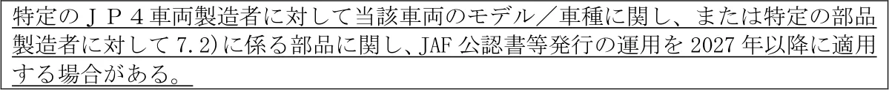
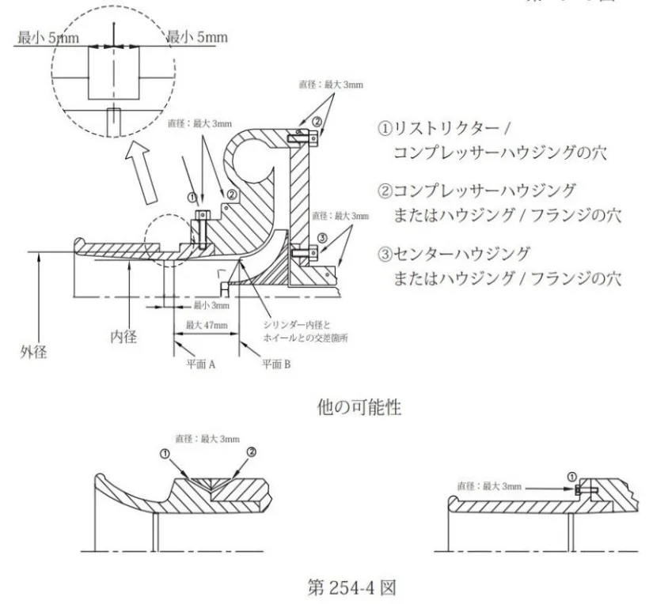
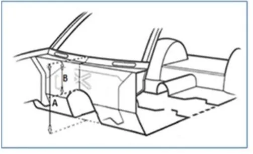
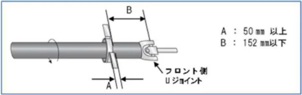

全日本ラリー選手権適用車両規定 JAF公認車両「JP4」に関する規定
P.1全日本ラリー選手権適用車両規定ＪＡＦ公認車両「ＪＰ４」に関する規定第１条 総則
本規定は、全日本選手権におけるクラス１（ＪＮ－１）およびクラス２（ＪＮ－２）に適用され、ＪＡＦから公認される車両「ＪＰ４」について定める。ＪＡＦ公認車両「ＪＰ４」（以下「ＪＰ４」という）の基本はＪＡＦ登録車両であること。ただし、本規定は、年度途中であっても適宜見直すことがある。第２条 車両の定義ＪＰ４は過給器付き車両を対象として、全日本ラリー選手権のために開発されたラリーカテゴリである。ＦＩＡグループＲ５（Ｒａｌｌｙ２）カテゴリの原則に基づいており、グループＮ（Ｒ４を含む）カテゴリの車両と同程度の性能を有する車両を製作することと国際規則との整合を目的とする。原則としてＪＰ４の基本車両は、ＪＡＦ登録車両規定に基づきＪＡＦに登録されたＪＡＦ登録車両であり、かつ以下ＦＩＡ国際モータースポーツ競技規則付則Ｊ項（以下「Ｊ項」という）第２６０条（Ｒａｌｌｙ５／Ｒａｌｌｙ４／Ｒａｌｌｙ３）または第２６１条 （Ｒａ ｌｌｙ２）および、それらの車両に関するＦＩＡ公認規則に準拠して製作されたＦＩＡ公認取得前の車両とする。基本車両は必ずしもＦＩＡ公認車両一覧に記載されている必要はなく、車両の技術情報と仕様、主要諸元等は、ＦＩＡ車両公認書（車両が公認されている場合）、ＪＡＦ車両公認書、またはＪＡＦ登録車両である場合は、当該自動車製造者が発行するカタログ、パンフレット等で確認するものとする。第３条 一般規定ＪＰ４は、道路使用のために臨時運行許可番号標で運用されていなければならない。したがって、日本国内における道路交通法および道路運送車両法を遵守しなければならない。ＪＡＦが発行する車両の公認書は必須とする。公認書は、ＪＰ４ボディシェルおよびエンジンタイプの公認の際に発行されるものとする。なお、本規定は、Ｊ項第２５３条と併せて適用されることとする。・Ｊ項第２５３条安全装置https://www.fia.com/regulation/category/123 最新の規定を参照のこと。車両管理のためログブック／パスポートによる運用を、２０２７年以降に適用する場合がある。
第４条 臨時運行許可番号標の取得
ＪＰ４は、臨時運行許可の対象となる競技用車両として、以下の要件すべてを満たし、競技会参加にあたり、競技会ごとに臨時運行許可を得なければならない。
①ＪＡＦ国内競技車両規則又はＦＩＡ国際競技車両規則に準拠した自動車であること。②道路交通法（昭和３５年法律第１０５号）第７７条に基づく道路使用許可を受けて実施される全日本ラリー選手権へ参加する車両であること。③道路交通条約締約国登録自動車（道路交通に関する条約の実施に伴う道路運送車両法の特例等に関する法律（昭和３９年法律第１０９号）第２条第２項に規定する自動車をいう。）以外の自動車であること。④道路運送車両法（昭和２６年法律第１８５号)第４条の登録を受けていない又は同第１６条第１項の登録を受けていること。⑤道路交通に関する条約附属書六に規定する条件を満たすものであり、かつ、安全の確保
P.2及び公害の防止のための措置（以下、「安全運行の確保等への対策」という。）が講じられていること。第５条 車両の公認
５.１）申請資格
JAF の特別団体とする。５.２）公認
当該年JAF 国内競技車両規則第１編レース車両規定第３章第１条１.６)および第２編ラリー車両規定第１章一般規定第３条３.１）に基づく。５.３）公認書
第２編ラリー車両規定第１章一般規定第３条３.２）に基づく。特定のＪＰ４車両製造者に対して当該車両のモデル／車種に関し、または特定の部品製造者に対して7.2)に係る部品に関し、JAF 公認書等発行の運用を2027 年以降に適用する場合がある。第６条 ＪＰ４改造規定

ＦＩＡおよび／またはＪＡＦ公認状態を維持しなければならないが、本規定で許可されている改造のみＦＩＡおよび／または 第７条７．２）に定める部品以外の使用が認められる。規定で許可されていないすべての変更および／または追加は明確に禁止される。許可される変更および追加の制限は、下記に規定され、使用または事故によって消耗した部品は、本規定に定められている部品とのみ交換が認められる。なお、代替エネルギーを使用するＥＶ車両を含み、本条で認められる以外のその他の駆動方式、駆動装置の使用も認める場合がある。
・ナット、ボルト、ネジ類は、強度特性が同等以上であるか、特に明記されていない限り、他のナット、ボルト、またはネジに交換でき、あらゆる種類のロック装置（ワッシャー、ロックナットなど）を備えることができる。・以下についてＪ項からの変更は、ＪＰ４で特別に承認され、車両公認書に詳細が記載されていなければならない。１）ロールケージ：ＪＡＦ国内競技車両規則第５編細則 ロールケージ製造者のロールケージＪＡＦ公認申請手続きに関する細則を参照のこと。２）シートサポートとアンカー：ロールケージの公認、またはＪＡＦあるいは他国ＡＳＮ公認と組み合わせて承認される。３）安全ベルトの取り付けポイント：ロールケージの公認と併せて承認される。４）車体の外観・形状の変更／軽量化：ＪＡＦあるいは他国ＡＳＮ公認と併せて承認される。・上記にかかわらず、マグネシウム合金、セラミックおよび／またはチタン合金の使用は、
量産車両に取り付けられた部品の場合を除いて許されない。第７条 対象エンジンおよび構成部品
７.１）対象エンジン
以下の条件で、「シリーズ生産エンジン」または、登録車両の製造者に関わらずＪＡＦ登録車両に搭載されたエンジンのいずれかが認められる。過給器付き最大４気筒で、気筒容積２，５００㏄以下とする。
なお、当該年のＪＡＦ国内競技車両規則第２編ラリー車両規定 第１章一般規定第７条７．２）に基づくクラス区分は、もとの気筒容積の１．７倍のクラスとする。注１：本規則では、「シリーズ生産エンジン」は次のように定義される。１）一般に販売／販売を開始した車両に搭載されたエンジン、および／または当該車両と共通のプラットフォームを使用する別の製造者の車両に搭載されたエンジンで、かつＪ
P.3ＡＦにより公認されたもの。２）少なくとも同一のエンジンユニットが１２ヶ月連続で生産されていなければならない。同一のエンジンを搭載し、１２ヶ月連続で５，０００台以上生産されていれば、異なるモデルの車両も生産数として数えることができる。注２：当該年の日本ラリー選手権規定および／または全日本ラリー選手権統一規則により、上記７.１）に定める以外のエンジンおよび本規定第８条に定める以外の気筒容積区分を設定する場合がある。７.２）構成部品
| SP | 純正部品 製造時に車両／エンジンに取り付けられた部品、あるいはその後の使用または 故障等により交換された元の部品と同一の部品、または交換部品であること。この ような部品はすべて、登録車両製造者の販売店販路を通じて入手できるものとす る。 関連するすべての仕様は、自動車製造者の公式情報（自動車製造者が発行するカ タログ、パンフレット等）または該当する車両公認書等から参照する。 注：シリーズ生産エンジンまたはＪＡＦ登録車両に搭載されたエンジンは純正部 品として定める。 |
| CP | 市販部品 一般的に市販されて、通常の販売網を通じて市場で入手可能な部品。 ただし、次項に記載する保安基準への適合が必須の部品等に関しては認定部品 （RP）として定める。 |
| RP | 認定部品 市販部品（CP）のうち、自動車の基本性能に直結する装置を構成し、故障や不具 合が安全性に重大な影響を及ぼす蓋然性が高く、適切な品質管理が求められる部 |
| 品に関しては別途、強度計算書や製品仕様書等と共にJAF に届け出をし、承認後認 定部品として定められる。なお、申請資格はJAF 特別団体とする。 また、この承認手続きを行った純正部品（SP）も認定部品とする。 ＜ＪＰ４認定部品の例＞サスペンションアーム、ハブ等 （承認に係る手続きは将来的に別途定める。） | |
| CDP | 専用部品 新たに専用に開発され、ＪＡＦにより公認された部品。オートマチックギアボッ クス等は「専用部品」とみなす。なお、申請資格はＪＡＦ特別団体とする。 （承認に係る手続きは将来的に別途定める。） |
| FP | 自由部品： 自由に調達できる部品。そのような部品は、代替部品が交換する部品に対して追 加の機能を持たないことを条件として、取り外したり、別の部品と交換したりする ことができる。 注：これらの部品には、本規定に基づき個別の条件／制限が追加される場合があ る。 |
る。エンジン、ギアボックス、ディファレンシャル、制御装置、冷却装置等の部品は、純正部品（SP）を使用する場合には制御は自由（部品そのものの変更は認められない）。第８条 最低重量気筒容積に対し以下の通りとし、競技中いかなる時でも以下に示す値以上の重量を有していなければならない。
| １，０６７cc まで | １，０３０kg |
|---|---|
| １，０６７cc を超え１，３３３cc まで | １，０８０kg |
| １，３３３cc を超え１，６２０cc まで | １，２３０㎏ |
| １，６２０cc を超え２，５００cc まで | １，３００㎏ |
これらの重量は、出走可能な状態で一切の潤滑油、冷却水を満たすとともにスペアホイールを１本のみ搭載し、燃料とドライバーを除く車両の真の最低重量である。疑義がある場合、技術委員長は、重量を検証するため、燃料タンク（複数）を空にすることができる上記条件の下、車両とクルーおよび装備品を合わせた最低重量は以下に示す値以上を有していなければならない。
| １，０６７cc まで | １，１９０kg |
|---|---|
| １，０６７cc を超え１，３３３cc まで | １，２４０kg |
| １，３３３cc を超え１，６２０cc まで | １，３９０㎏ |
| １，６２０cc を超え２，５００cc まで | １，４６０㎏ |
・バラストの使用は、Ｊ項第２５２条に規定されている条件の下で認められる。第９条 エンジン
第５条５．１）に示す申請資格を有する自動車製造者が提供する当該エンジンの公式情報（自動車製造者が発行するカタログ、パンフレット等）またはＦＩＡ公認書を基準とする。ボアとストロークの測定値を含む気筒容積は、車両の公認書に詳細が記載される。再スリーブ加工は、乾式または湿式のスリーブ内部セクションが円形で、シリンダーと同芯であり、シリンダーごとに独立している場合は許される。ギアボックス、およびエンジンマウントなどの補助装置を取り付ける目的でのエンジンブロックの最小限の機械加工は許される。
９.１）エンジン性能調整
過給器付きエンジンについては、下記の規定が適用される。①過給システムは公認されたエンジンのものに合致していなければならない。②すべての過給器付き車両はコンプレッサーハウジングに固定されるリストリクターを装備していなければならない。③エンジンに供給されるすべての空気はこのリストリクターを通過しなければならず、リストリクターは、下記を遵守していなければならない。・Ｊ項第２５４－４図参照・リストリクターの最大内径はＪ項第２６１条に準じたエンジンおよびＡＰ４技術規則3.0 エンジン仕様（Article 3.0 Engine - Specification）に記載の規則に従って製作されたエンジンについては３２mm、シリーズ生産エンジンおよびＪＡＦ登録車両に搭載されたエンジンに何ら加工のないエンジンについては３４mm とする。・内径は最低３mm の長さが維持されていなければならない。・長さは平面Ａの上流で計測される。・平面Ａはターボチャージャーの回転軸に垂直で、吸気ダクトの中立軸に沿って計測し平面Ｂの最大４７mm 上流にある。・平面Ｂはホイールブレードの最も上流端部と中心線がターボチャージャーの回転軸となっている直径３４mm の気筒の間の交差部を通過する。この内径は温度条件に関わらず保持されなければならない。リストリクターの外径は、その最も細い部分で４０mm 未満でなければならず、上流、下流の双方へそれぞれ５mm 以上の距離を維持していなければならない。リストリクターのターボチャージャーへの取付けに当たっては、コンプレッサーからリストリクターを取り外すためにコンプレッサーハウジングまたはリストリクタ
P.5ーから２つのネジを完全に取り除かなければならないような形で行わなければならない。ニードルスクリューを使用した取付けは認められない。リストリクターの取付けに際し、コンプレッサーハウジングの部材の除去、または追加は、その目的がリストリクターをコンプレッサーハウジングに取り付けるためのものである場合に限り認められる。ネジの頭部に封印を可能にするための穴を開けなければならない。リストリクターは、単一の素材で作られていなければならず、取付けおよび封印を目的とした場合にのみ穴を開けることができる。これは、取付けネジ、リストリクター(またはリストリクターとコンプレッサーハウジングの取付け部)、コンプレッサーハウジング(またはハウジングとフランジの取付け部)、およびタービンハウジング(またはハウジングとフランジの取付け部)の間に施されなければならない(第254-4 図を参照)。ディーゼルエンジン車両の場合、リストリクターは、上記の条件下で、最大内径が３ ７mm、外径が４３mm でなければならない(この直径の値は予告なく変更される場合がある)。並列する２基のコンプレッサーを有するエンジンの場合、上記に示された条件で、各コンプレッサーは、最大内径２４mm、最大外径３０mm のリストリクターにより制限される。④スーパーチャージャー付き車両についてはリストリクターの装着は不要とするが、システム駆動関係のプーリー径の変更は認められない。ただし、リストリクター装着車両との性能の均衡が保たれない場合には、本取り扱いを見直す場合がある。⑤過給器のコンプレッサーハウジングの内径が市販状態で３２㎜以下である場合はリストリクターの装着は不要とする。ただし、リストリクター装着車両との性能の均衡が保たれない場合には、本取り扱いを見直す場合がある。⑥リストリクターの取り付けについてはＪ項第２５５条５項に準拠するものとし、その取り付けに必要なコンプレッサーハウジングへの最小限の加工は認められる。また、リストリクター取り付けに伴う最小限の部品の変更は認められる。

追加として、次の性能コントロールが導入される場合がある。・スロットルバルブのサイズ・ＦＩＡブースト制御システム。（FIA TECHNICAL LIST No.43: LIST OF BOOST CONTROL
P.6SYSTEMS (POP-OFF VALVE) HOMOLOGATED BY THE FIA FOR GROUP R）・コントロール（公認）ＥＣＵ注：エンジン性能は、現行のＦＩＡグループＲａｌｌｙ２（Ｒ５）のパワーウェイトレシオに近似することとするが、これを上回らないこととする。９.２）エンジンの位置と取付エンジンは、以下の条件下で縦方向または横方向のいずれかの位置に向けることができる。・エンジンは、元の搭載位置の外に移動することはできないが、シリーズモデルに関連してそのエンジンルーム内の範囲で移動することができる。・バルクヘッドの上部1/3（範囲）は、エンジンの搭載に対応するために変更してはならない。＊自動車製造者が取り付けたブラケットは取り外すことができる。＊自動車製造者の成形プレスおよび成形品は、バルクヘッドパネルの主要な平面よりもトリミングまたは削除することができる。
Ａ：バルクヘッドの高さの定義Ｂ：バルクヘッドの上部1/3 の範囲

９.３）エンジンカバー
エンジンルーム内の機械部品を覆うことを目的とした主にプラスチック製エンジンシールドで、美観を保つこと以外に機能を有さないものであれば、取り外してもよい。また、エンジンルーム内の防音材の取り外しは認められる。９.４）スロットルコントロールアクセルケーブルの交換またはフライバイワイヤー方式（電気信号により操作するもの）を含めて自由。９.５）ボルト、ナット、ネジ強度特性が同等以上であるか、特に明記されていない限り、他のナット、ボルト、またはネジに交換が許される。ロック装置（ワッシャー、ロックナットなど）の追加、変更は許される。エンジン固定用のボルト類はスチール系素材でなければならない。９.６）点火装置スパークプラグ、レブリミッター、ハイテンションコードまたはイグニッションコイルは変更することが許される。９.７）電子制御装置純正ＥＣＵ（システム）の使用もしくは、次の条件での変更が認められる。・市販されているＥＣＵであること。・すべてのアクチュエーターがＥＣＵで制御されていること。ワイヤーハーネスは自由。＊性能調整を目的として、将来的に特定のＥＣＵが指定される場合がある。９.８）データロギングデータロギングシステムの使用は認められる。９.９）冷却装置純正部品（SP）のウォーターポンプの使用もしくは、次の条件での変更が認められる。・機械式または電気的式駆動であること。・搭載位置がエンジンルーム内であること。冷却ファンを含め、純正ラジエターの使用または、エンジンルーム内に設置される場
P.7合は自由。
ラジエターキャップおよびホース類の変更は自由。エキスパンション（ヘッダー）タンクは、リザーバタンクおよびエアブリード装置含め自由。９.１０）キャブレター使用を認めない。９.１１）インジェクションシステム純正部品（SP）のインジェクションシステムの使用もしくは、次の条件での変更が許される。・インジェクターの最大数は、シリンダーの数または、シリーズ生産エンジンに取り付けられている数と同じであること。・配管と燃圧レギュレーターとの接続部を備えた新たなインジェクターレールの使用等は認められる。・その他の追加インジェクション（水噴射などを含めて）は認められない。９.１２）エアクリーナーケースの変更を含めて自由。９.１２.１）吸気系インテークマニホールドは純正部品（SP）の加工を含めて自由。９.１３）潤滑油系統
（１）純正部品（SP）のオイルパンの使用もしくは、次の条件での変更が許される。
・鋼板製もしくはアルミ合金製であること。・オイルを保持する機能のみを有していること。（２）純正部品（SP）のオイルポンプの使用もしくは、次の条件での変更が許される。
・油圧調整装置の変更は認められる。・ターボチャージャーの潤滑システム（エンジンブロックまたはシリンダーヘッドの
接続部からターボチャージャーへのフィッティングを備えた圧力パイプ、およびターボチャージャーからオイルサンプまたはエンジンブロックへのリターンパイプ）を追加することができる。（３）ブリーザータンク（オイルキャッチタンク）の追加を含み、ブリーザー装置の変
更が認められる。（４）純正の排ガス制御装置は取り外すことができる。９.１４）エンジンマウント・ブッシュ
取付位置、数を含めて自由。９.１５）排気系（エキゾーストマニホールドを除く）
オーガナイザーは競技会特別規則に規定することによって、音量を規制することができる。９.１５.１）排気系システムターボチャージャーの出口以降は次の条件で自由に変更が許される。・排気管の変更を目的として他のコンポーネントの変更を行わないこと。（公認ボディシェルの加工済みフロアパンを除く）・排気管の開口部は車両後方部にあること。（右向きまたは左向きに開口してはならない。）・９.１５.２）に定められた排出ガス触媒を備えること。９.１５.２）触媒装置全ての車両は、触媒装置を装着しなければならない。（１）触媒式コンバーターは量産品（２，５００台より多く生産された公認/登録されたモデルに装着されていたもの）であるか、ＦＩＡテクニカルリストNO.８（ＡＳ Ｎ公認触媒コンバーター）に列記されているものでなければならない。（２）触媒式コンバーターのコアは、排気パイプ終了地点前の少なくとも１５０㎜手
P.8前に位置しなければならない。９.１６）シリンダーヘッドガスケット
厚さ、材質を含み自由。９.１７）オートクルーズ
装置を含めて取り外すことが許される。９.１８）再ボーリング
エンジンブロックの再ボーリングは、最大１．０ ㎜まで許されるが、これにより気筒容積の制限を超えることは認められない。９.１９）過給器次の条件で変更が許される。・当初の車両の純正の過給器または、次の条件に適合する過給器に変更できる。・少なくとも２，５００基のターボチャージャーを製造する製造者から入手できるもの。・ターボチャージャーは単一ステージの圧縮、拡張を行う単一ユニットであること（多段/複数過給禁止）。エキゾーストマニホールドとターボチャージャーの間に、厚さ最大３０㎜までの取り付けアダプターの使用が許される。・最大ブースト圧は、絶対圧２.５バールとする。＊ＦＩＡブースト制御システム（ブローオフバルブ）が導入される場合がある。（FIA TECHNICAL LIST No.43: LIST OF BOOST CONTROL SYSTEMS (POP-OFF VALVE) HOMOLOGATED BY THE FIA FOR GROUP R）９.１９.１）リストリクター
・９.１）「エンジン性能調整」に定めるリストリクターを装備しなければならない。・リストリクターの最大内径はJ 項第２６１条に準じたエンジンおよび、ＡＰ４技術規則3.0）エンジン仕様に記載の規則に従って製作されたエンジンについては３２ ㎜、量産エンジンに何ら加工のないエンジンについては３４㎜とする。・リストリクターは単一の素材で作られていなければならず、シリンダーに供給され
る空気はすべてこのリストリクターを通過しなければならない。９.１９.２）インタークーラー
純正部品（SP）のインタークーラーの使用もしくは、次の条件での変更が許される。・エンジンコンパートメントの範囲内および／または、コンパートメントの直前に設
置されていること。・追加の冷却用水噴システムは認められる。９.２０）量産バランスシャフト
シリーズ生産エンジンにバランスシャフトが取り付けられている場合には、その駆動装置を含めて取り外すことが認められる。９.２１）シリンダーヘッド純正部品（SP）のみが許され、次の条件で変更が許される。・材質の変更は認められない。・バルブシート、バルブガイドは自由。ただし各バルブの作動角は変更してはならない。・ガスケット面の平面は、圧縮比の調整を目的として最大１㎜までの再研磨が許される。９.２２）ピストン純正部品（SP）の使用もしくは、次の条件での変更が許される。・ピストン（ピン、サークリップ、ピストンリング含む）の最低重量は３５０ｇとする。・各ピストンには、少なくとも厚さ０．９５㎜の単一ピストンリングを３個以上備えなければならない。９.２３）コネクティングロッド純正部品（SP）の使用もしくは、次の条件での変更が許される。・コネクティングロッド（キャップ、ボルト、ベアリングを含む）の最低重量は４５０ｇとする。
P.9・材質はスチール製に限る。・コンロッドキャップ（ビッグエンド）のボルトはスチール製でなければならない。９.２４）クランクシャフト純正部品（SP）の使用または、自由に変更できるが、いずれも次の条件を満たさなければならない。・クランクシャフト（パイロットベアリングを含む）の最低重量は以下の許可された加工の有無にかかわらず、当初の純正部品（SP）の９５％（最大５％の変更）以上でなければならない。・クランクシャフトに追加の機械加工や表面処理を行うことができる。・メインおよびコンロッドベアリングジャーナルは、元の幅と同等であれば他の部品に変更できる。・各クランクシャフトジャーナルの幅と直径は、拡大することが認められる。・クランクプーリー／ギアは自由に変更できる。９.２５）スロットルバルブハウジング純正部品（SP）の使用もしくは、次の条件での変更が許される。・シングルスロットルボディに限る。・最大開口部サイズはバタフライ部分では ６４ ㎜＋/－０．２５ ㎜とする。・ハウジングの外観の変更は認められるが、バタフライ部の開口部の直径は変更してはならない。・封印用ワイヤーを通せるようにハウジングの取付ボルトに穿孔されていること。＊市販部品（CP）としてスロットルバルブハウジングが導入される場合がある。９.２６）カムシャフトカムシャフトの数の変更は認められない。純正部品（SP）の使用もしくは、次の条件での変更が許される。・「VVT」、「VALVETRONIC」等のタイプの機構は、純正部品（SP）に元から備わる場合は認められ、その動作の有無は問わない。＜４気筒エンジン＞・吸気バルブの最大リフト量は１１㎜以下とする。・排気バルブの最大リフト量は１１㎜以下とする。＜４気筒未満のエンジン＞・吸気バルブの最大リフト量は１３㎜以下とする。・排気バルブの最大リフト量は１３㎜以下とする。９.２７）吸気バルブ純正部品（SP）の寸法変更は認められない。・市販されている純正部品（SP）と同一寸法の製品への交換は認められる。９.２８）排気バルブ純正部品（SP）の寸法変更は認められない。・市販されている純正部品（SP）と同一寸法の製品への交換は認められる。９.２９）エキゾーストマニホールド純正部品（SP）の使用もしくは、次の条件での変更が許される。・マニホールドは自由に変更できるが、材質はスチール製、ステンレス製、または鋳鉄製
に限られる。第１０条 駆動系等
１０.１）駆動方式
駆動方式：駆動輪は最大４輪までとする。 １０.２）フライホイール
純正部品（SP）の使用もしくは、次の条件での変更が許される。・フライホイール（スターターリングと固定ボルト含む）の最低重量は３，５００g とす
P.10る。・スターターリングを除いて単一部品で製作されていなければならない。・スターターリングはフライホイールと統合されており少なくとも直径２５０㎜以上であること。・材質はスチール製であること。・これら以外の場合は、市販部品(CP)のギアボックスと組み合わせて公認されていなければならず、ＪＡＦ車両公認書に詳細が記載されていること。・フライホイールは市販部品(CP)のギアボックスと組み合わせて公認される場合がある。この場合、ＪＡＦ車両公認書に詳細が記載される。・スターターリングギアは市販部品(CP)のギアボックスと組み合わせて公認される場合
がある。その場合においてフライホイールとは別に異なる方法で接続することが許される。ＪＡＦ車両公認書に詳細が記載される。１０.３）クラッチ純正部品（SP）の使用もしくは、次の条件での変更が許される。・フリクションディスク（センタープレート）は最大２枚とする。・純正のディスク径から変更する場合は、最小径は１８３㎜とする。１０.３.１）クラッチ制御制御はフットペダル操作のままであれば自由。１０.４）ギアボックス基本となるＪＡＦ登録車両の純正部品（SP）（量産品）が使用されているか、公認された専用部品（CDP）の使用が認められ、ＪＡＦ車両公認書に詳細が記載される。１０.４.１）量産ギアボックス量産ギアボックスを使用する場合は次の条件が適用され、ＪＡＦ車両公認書に詳細が記載される。・将来的に、ギアボックスの認定を行う場合がある。その場合、ギアボックスのタイプ／仕様は、認定されたギアボックス製造者から市販されていること。・最大で前進６段＋後退１段までとする。・ギアボックスケース内部は自由。（ギアの歯数を含めギア比は自由）・外部のリンケージのジョイントは自由。・ギアボックスのケーシング／ボルトは封印用ワイヤーを通せるように穿孔されていること。・封印はギアボックスのみに関係し、クラッチおよびその関連装置の整備を妨げるものではないこと。１０.４.２）専用部品ギアボックスを使用する場合は次の条件が適用され、ＪＡＦ車両公認書に詳細が記載される。・ギアボックスは、元の自動車製造者の仕様に準拠していること。・外部のリンケージのジョイントは自由。・ギアボックスのケーシング／ボルトは、封印用ワイヤーを通せるように穿孔されていること。・封印はギアボックスのみに関係し、クラッチおよびその関連装置の整備を妨げるものではないこと。１０.４.３）シフトパターンシフトパターンは「Ｈ」パターンもしくはシーケンシャル制御のいずれかとし、動作は機械式でなければならない。ギアレバーはフロアまたは、ステアリングコラムのいずれかに固定されていれば、調整を可能とする。１０.５）ディファレンシャル１０.５.１）センターデフセンターデフは、以下の条件で変更が認められる。・機械式ＬＳＤの装着が認められる。
P.11・純正部品（SP）センターデフを使用する場合はＪＡＦ公認車両またはＪＡＦ登録車両
に標準装着されている部品でなければならず、一切の改造は禁止される。１０.５.２）ファイナルドライブおよびデフハウジング
基本となるＪＡＦ登録車両の純正部品（SP）（量産品）もしくは公認された専用部品（CDP）の使用が認められる。専用部品（CDP）を使用する場合、ＪＡＦ車両公認書に詳細が記載される。・両方の場合においてハウジング／ボルトは封印用ワイヤーを通せるように穿孔されていること。・封印はファイナルドライブ／ディファレンシャルユニットのみに関係し、ユニットの車両からの取り外しを妨げないこと。・「専用部品」のリアサブフレームにある指定位置を利用する場合、リアデフハウジング
のマウント方法は自由。１０.５.３）ファイナルドライブ ディファレンシャル装置
機械式リミテッドスリップデフ（LSD）の使用が次の条件でのみ許される。・ハウジングの加工を行わずに取付できること。１０.５.４）リアデファレンシャル冷却装置
リアデファレンシャル用オイルクーラーの使用が認められる。ライン、ポンプ、起動方法は自由。１０.６）オートマチックギアボックス変更および使用は認められる。ギアボックス：マニュアルトランスミッションをオートマチックトランスミッションに変更することができる。（純正部品（SP）／専用部品（CDP）１０.７）ドライブシャフト適合する純正部品（SP）または認定部品（RP）の使用は自由。または、純正部品（SP）を利用する製造者によって規定に合わせて生産されたカスタムドライブシャフトは、次の条件での使用が認められる。
・シャフトの材質はスチール（鉄）製であること。・強度計算書があること。・等速（ＣＶ）ジョイントは、ハブキャリア／ベアリングアッセンブリーに適合していること。１０.８）プロペラシャフト適合する純正部品（SP）または認定部品（RP）の使用が認められる。または、自動車製造者が申請し公認されたカスタムプロペラシャフトは次の条件での使用が認められる。
・最小外径５０㎜、最小材料厚１．５㎜であること。・最低重量はシャフト構成全体（センターベアリングなし）で８．５㎏とする。
・シャフトの材質はスチール（鉄）製であること。・強度計算書があること。
使用するプロペラシャフトに関わらず、脱落防止用安全フープを備えなければならない。

第１１条 サスペンション
電子安定制御システムは完全に取り除かなければならない。１１.１）前後サスペンション上部取付点
前後の上部取付点は自動車製造者によってボディシェルに取り付けられた専用部品
P.12（CDP）のストラットタワーに取り付けなければならない。１１.２）前後ショックアブソーバーアッパーマウント／アッパープレート
ショックアブソーバー（ダンパー）の上部をボディシェルの専用部品（CDP）ストラットタワーにのみ固定される場合は、次の条件での変更が認められる。・アッパーマウントプレートは、アルミニウムまたはスチール製でなければならない。
・ピロボールの使用が認められる。・ショックアブソーバーシャフト（上部）は、ストラットタワーの中央位置まで、すべての方向に最大２０㎜以内に配置されていること。１１.３）前後ハブ／ベアリングアッセンブリーハブ／ハブアッセンブリーは認定部品（RP）でなければならず、専用部品（CDP）もしくは認定部品（RP）のアップライトに直接取り付けられていなければならない。ハブベアリングアッセンブリーは、純正部品（SP）と同一仕様の代替品に置き換えることができる。１１.４）前後アップライトアップライトは純正部品（SP）もしくは認定部品（RP）でなければならない。アップライトは純正部品（SP）もしくは認定部品（RP）のウイッシュボーン（アダプター）とショックアブソーバーのハウジング／ケースに直接取り付けられていなければならない。各アップライトユニットは次の構造を含まなければならない。・サスペンションウィッシュボーン（アダプター）の取り付けポイント（ロアポイント）。・ショックアブソーバーユニットの取り付けポイント（アッパーポイント）。
・ステアリングアーム（ブラケット）の取り付けポイント。・リアトーリンクの取り付けポイント。（ブラケット）・ブレーキキャリパー（ブラケット）の取り付けポイント。・ハブキャリア／ベアリングアッセンブリーの取り付けポイント。１１.５）前後ロアウィッシュボーン（ロアアーム）
ロアウィッシュボーン／ロアアームは認定部品（RP）であり強度計算書がなければならず、いかなる変更も認められない。ロアウィッシュボーン／ロアアームは認定部品（RP）のサブフレームと認定部品（RP）のアップライトに直接取り付けられていなければならない。
ロッドエンドベアリングは、純正部品（SP）と同一仕様の代替品に置き換えることができる。１１.６）フロントサブフレームサブフレームは認定部品（RP）もしくは専用部品（CDP）であり、自動車製造者によって製作された車体への取り付けポイントに直接取り付けられていなければならない。基本車両と同一方法で取り付けられる物は、この限りでは無い。フロントサブフレームには、次のオプションが適用される。・オプション１－縦置きエンジン／ギアボックスの取り付け用サブフレーム・オプション２－横置きエンジン／ギアボックスの取り付け用サブフレームオプションに関わらず、次の仕様でなければならない。・認定部品（RP）のサブフレームの変更は認められない。・サブフレームは車体から取り外し可能でなければならない。・サブフレーム単体で最低重量は８．８㎏以上であること。１１.７）リアサブフレームリアサブフレームは認定部品（RP）であり、自動車製造者によって製作されたボディシェルの取り付けポイントに直接取り付けられていなければならない。基本車両と同一方法で取り付けられる物は、この限りでは無い。サブフレームは、次の仕様でなければならない。・認定部品（RP）のサブフレームの変更は認められない。
P.13・サブフレームは車体から取り外し可能でなければならない。・サブフレーム単体で最低重量は ８．５ ㎏以上であること。１１.８）前後ショックアブソーバー／スプリングアッセンブリー
ショックアブソーバー／スプリングアッセンブリーは、次の条件で自由に使用が認められる。・フロントおよびリアサスペンションには、マクファーソンタイプのショックアブソーバー／スプリングアッセンブリーのみが認められる。これは、サスペンションメーカーから市販されている生産品（スチール製）でなければならない。・変更されていない専用部品（CDP）のボディシェルタレット（ストラットタワー）内に収まるショックアブソーバー／スプリングアッセンブリーのみが認められる。・すべり軸受のみが認められる。リニアベアリングタイプのダンパーは特に禁止される。・各組立部品は、生産カタログおよび部品カタログ等に掲載され一般的な方法で入手す
ることができなければならない。１１.９）スタビライザー／アンチロールバー
ブッシュおよび接続リンクを含めて自由。・ボディへの取付点が変更される場合は、車両の公認に含まれていなければならない。・スタビライザー本体の材質は、スチール（鉄）製でなければならない。・調整式は認められるが、車室内から調整できる機構は認められない。第１２条 ホイールおよびタイヤ
１２.１）ホイール１２.１.１）ホイール（グラベル仕様）
次の条件で自由に変更が認められる。・直径最大１５．０インチ以下。・幅７．０インチ以下。１２.１.２）ホイール（ターマック仕様）
次の条件で自由に変更が認められる。・直径最大１８．０インチ以下。・幅８．０インチ以下。１２.２）タイヤ
当該年の全日本ラリー選手権統一規則に定める。第１３条 制動装置
１３.１）主ブレーキ１３.１.１）油圧配管
ブレーキ油圧配管は、次の条件で自由に変更が認められる。・全てのブレーキシステム構成部品は保安基準に準拠しなければならない。
・ＡＢＳシステムは取り除くことが認められる。・専用部品（CDP）のブレーキ制御装置の取付が認められる。１３.１.２）ペダルアッセンブリー／プレッシャーレギュレーター（プロポーションバルブ）は純正部品（SP）の使用もしくは、次の条件での変更が認められる。・ペダルボックスアッセンブリーは、市販されている量産部品への変更が認められる。
・アッセンブリーボディシェルへの取り付けは、調整式が認められる。１３.１.３）圧力調整プレッシャーレギュレーター（プロポーションバルブ）はペダルアッセンブリー一体式もしくは、別体の油圧バルブの使用が認められ、バルブの取り付け位置は自由。１３.１.４）マスターシリンダーは純正部品（SP）の使用もしくは、次の条件での変更が認められる。・制動装置製造者から市販されている量産部品への変更が認められる。
P.14・全ての部品は生産カタログまたは競技用部品カタログから入手できなければならない。１３.１.５）ブレーキサーボは純正部品（SP）の使用もしくは、次の条件での変更が認められる。・サーボユニットは制動装置製造者から市販されている量産部品への変更が認められる。
・純正部品（SP）のサーボユニットは取り外してもよい。１３.２）ブレーキキャリパー／ディスク／ベル（グラベル仕様）１３.２.１）ブレーキキャリパーは次の条件で自由に変更が認められる。
・制動装置製造者から市販されている量産部品であること。・ホイール毎に1 つのキャリパーユニットのみであること。・キャリパーハウジング／ボディには、スチールまたはアルミニウム製のみが認められる。・キャリパーあたり最大４つのピストンまでとする。
取り付けブラケットは自由。ブラケットを除いて、すべての部品は製品カタログまたは部品カタログから入手できなければならない。・チタンおよびセラミック材料は特に禁止される。１３.２.２）ディスクおよび取付ベルは次の条件で自由に変更が認められる。
・制動装置製造者から市販されている量産部品であること。
・ディスクの最大直径３０４㎜／最小厚さ２８㎜とする。※制動装置製造者は、生産カタログもしくは部品カタログを発行していなければならない。また、制動装置製造者として認識される銘柄以外の部品を使用する場合は、その部品を製造する制動装置製造者が制動装置部品を一般市販向けに生産していることの書面等による証明を条件とする。１３.３）ブレーキキャリパー／ディスク／ベル（ターマック仕様）１３.３.１）ブレーキキャリパーは次の条件で自由に変更が認められる。
・制動装置製造者から市販されている量産部品であること。・ホイール毎に1 つのキャリパーユニットのみであること。・キャリパーハウジング／ボディには、スチールまたはアルミニウム製のみが認められる。・キャリパーあたり最大４つのピストンまでとする。・取り付けブラケットは自由。ブラケットを除いて、すべての部品は製品カタログまた
は部品カタログから入手することができなければならない。・チタンおよびセラミック材料は特に禁止される。１３.３.２）ディスクおよび取付ベルは次の条件で自由に変更が認められる。
・制動装置製造者から市販されている量産部品であること。
・ディスクの最大直径３５５㎜／最小厚さ３１㎜とする。
車両重量１，３００㎏以上は、最大直径３７０㎜／最小厚さ３１㎜とする。※制動装置製造者の定義：１３.２.２）※と同様とする。第１４条 操舵装置
１４.１）ステアリングコラム
部品の全てが量産品であること。複数の部品で構成される場合は、設計と取り付けは自由。・コラム調整システムは固定する必要があり、工具を使用してのみ操作可能でなければ
ならない。・ステアリング固定装置はすべて取り外さなければならない。１４.１.１）バルクヘッド／ファイアウォール開口部：ステアリングコラム用に新しい位置と新しい開口部を設けることが許される。
P.15１４.２）ステアリングラック（ハウジング／ラック／ロッドおよびロッドエンド）
すべての部品は、純正部品（SP）または、操舵装置の製造者によって生産された市販の部品のいずれかでなければならない。
・ラックは、認定部品（RP）のフロントサブフレームの指定された場所に取り付けること。・ケーシングの両端にあるラックバーサポートを変更または追加することが許される。・サブフレームに固定することのみを目的として、ラックケーシングを変更することが
許される。・基本車両と同一の取り付けの場合は、この限りでは無い。１４.２.１）パワーステアリング
純正部品（SP）または、部品メーカーによって生産されたユニットのいずれかである場合は、油圧または電気式パワーステアリングの取り付けが許される。１４.２.２）パワーステアリング冷却装置
取り付けを含めて、自由に変更が許される。第１５条 車体
１５.１）一般条件
車体の製造者は、公認された「車体ジグ」または寸法／仕様を使用し、量産車体に対する次の変更に責任を負うものとする。
・フロントおよびリアサスペンションタレット（ストラットタワー）の取り付け。
・フロントおよびリアサブフレーム取り付けポイントの追加および変更。・ロールケージおよび関連する補強材の追加および変更。・燃料タンク用の漏れ防止ボックスの追加および変更。・ドライブラインとトランスミッションに対応するためのトランスミッショントンネルの追加および変更。・ドライブシャフトとサスペンション要素に対応するための変更。・後部フロアのスペアホイールハウジングの除去。・エンジン／トランスミッションおよび補助構成部品の取り付けを可能にするための変更。・ボディキットの取り付けを容易にするためのボディシェルの局所的な変更。・未使用のブラケット、アクセサリーサポート、内装を取り外すためのボディシェルの
変更。量産車両のボディシェルのすべての追加取り付け点は、すべての状況下で、ロールケージとは関係なく、サスペンションの変更によって引き起こされる負荷に耐えられるように補強しなければならない。１５.１.１）車体重量改造後の車体の重量は、２９０ ㎏以上でなければならない。重量に含まれるもの：量産車体、ロールケージ、車体に固定されたシートマウント、リッド付きの安全燃料タンクボックス、フロントとリアのサスペンションタワー、フロントとリアのサブフレームマウント、ステアリングコラムロアマウント、フロントとリアのスタビライザーマウント、ドライブトレインのトンネル変更。重量に含まれないもの：リアハッチ、フロントガード、フロントおよびリアバンパーアッセンブリー、ドア、ガラス類。１５.１.２）ロールケージ車両公認書に詳述されている設計からいかなる方法、または形状にも変更してはならない。１５.１.３）インナーホイールアーチ 前後
P.16前輪と後輪のアーチは、サスペンションタワーに取り付けられ、（幅の広い）フェンダーに合うように横方向に拡大されていること。
ホイールを収容するために、外側のホイールアーチを変更することができる。１５.１.４）サイドフレーム
ホイールアーチの高さで上部サイドフレームを部分的に切断することが許される。この切り欠きのあるサイドレールは、衝突時の車両の抗力が少なくとも、元の抵抗と等しくなるように再構築されなければならない。下側のレールは、ドライブシャフトが移動できるように変更することができる。変更は、側面から見て高さ２５㎜、幅６０㎜の領域に限られる。
いずれの場合も、この変更はＪＡＦ公認車両申請により公認を受けなければならない。下側のサイドレールは、ギアボックスアッセンブリーを取り付けることができるように変更することできる。この変更はすべての場合おいてJAF 公認車両申請によりに公認を受けなければならず、取付けに必要な最小限の変更に限られる。１５.１.５）トランスミッショントンネルセンタートンネル／フロアは変更が認められる。トンネルの寸法は、トランスミッションプロペラシャフトと排気システムの通過を可能にするためにのみ最小限であること。元の鋼板を置き換えるすべての鋼板の最小厚さは１．２㎜以上であること。１５.１.６）リアフロアパン内部の床のリア部分は、スペアホイールハウジングを取り外し、その場所にいくつかの板金補強材を備えた平面鋼板を追加することによって変更できる。１５.１.７）第一メンバー／ラジエターサポートシャシー構造の剛性に影響を与えない限り、エンジン／エンジン付属品の取り付けを可能にするために、上部および／または下部の第一クロスメンバーを（車両のヘッドランプ間で）自由に変更することができる。さらに、クロスメンバーを別のサポートに置き換えることができる。１５.１.８）ジャッキ／スタンド サポートポイントジャッキポイントは、ボディシェルサイドシルパネルに追加、強化または移動することができる。１５.２）ボディシェル外観１５.２.１）ドア（純正部品（SP））純正部品（SP）のリアドアの部分的な変更は、拡張されたホイールアーチフレアを追加する目的に限り認められる。１５.２.２）側面保護エネルギー吸収フォームエネルギー吸収安全フォームは、ドアパネルの要件を含めて、取り付けなければならない。ポリカーボネート製のサイドウィンドウは、このフォームの取り付け要件に従った場合に許される。側面保護エネルギー吸収フォーム取り付けは、乗車人員側（前席側）とする。１５.２.３）ボディキットボディキットを製作／使用する場合に、その設計は予めJAF によって承認されなければならない。ボディキットは、車両の公認書に表示される次の部品（前部3/4 と後部3/4の写真）で構成される。
・フロントバンパー・ボンネット・後部バンパー・フロントフェンダー（左右）・リアドアエクステンションを含むリアフェンダー（左右）・サイドスカート・ルーフパネル
P.17・リア空力デバイス（リアスポイラー／ウイング）１５.２.３.１）フロントバンパー
純正部品（SP）フロントバンパー（中央部）の基本形状は維持しなければならない。その他部分は、次の変更が許される。
・フロントガードの拡大に合わせ、バンパーを拡大することができる。・純正部品（SP）グリルは、金網に置き換えることができる。・フロントフェンダーのサイドエレメントと一緒にバンパーに追加の開口部を設けることができる。保護モールディングの開口部の総表面は２，５００㎠を超えてはならない。開口部は、バンパーの構造強度に影響を与えてはならない。・材質は、純正部品（SP）および／または複合材でなければならない。・フロントバンパーの最低重量は４．５㎏（元のバンパーが下回っている場合を除く）。・フロントバンパー下部は取り外し可能。この取り外し可能な部分は、垂直投影で見た場合、高さが１００㎜を超えて上部から突き出てはならない。・取り外し／交換を容易にするために、新しい留め具を備えることができる。・量産車両のバンパーとボディシェルの間にある元の取り付け／衝突保護部品を取り外
すことは許される。１５.２.３.２）リアバンパー
純正部品（SP）リアバンパー（中央部）の基本形状は維持しなければならない。その他部分は次の変更が許される。
・リアフェンダーの拡大に合わせて、バンパーを拡大することが許される。・材料は複合材であり、純正部品（SP）でなければならない。・一連の取り外し可能な装飾機能を、リアバンパーの主たる構造を形成する平らな表面に置き換えることができる。・排気の元のカットアウトの変更、または１００㎠のカットアウト製作が許される。・取り外し／交換を容易にするために、新しい留め具を備えることができる。・量産車両のバンパーとボディシェルの間にある元の取り付け／衝突保護部品を取り外
すことは許される。１５.２.４）フロントフェンダー
フロントフェンダー（上部）の基本的な形状は維持しなければならないが、次の変更が許可される。・車両のトレッド幅に合わせて広げることができる。この増加は、拡張によって得られ
るか、新しいパーツで製作されても良い。・材質は、純正部品（SP）および／または複合材でなければならない。・フェンダー間の最大幅は１，８２０㎜（フロントアクスルの中心線で測定）。・追加の空気取り入れ口または排出口は認められない。・空力要素の追加は認められない。１５.２.５）リアフェンダー
リアフェンダー（上部）の基本的な形状は維持しなければならないが、次の変更が認められる。・車両のトレッドの幅に合わせて広げることができる。この増加は、拡張によって得られるか、新しいパーツで製作されても良い。・材質は、純正部品（SP）および／または複合材でなければならない。・一般的な条件：フェンダーは、ラジアルプロジェクションで車輪全体をカバーしなけ
ればならない。つまり、ホイール／タイヤアッセンブリーのホイールハブの中心から垂直になる上部は、垂直方向に測定した時に車体で覆われていなければならない。１５.２.６）サイドスカートオリジナルの車体の形状に従っている限り、自由なデザインの変更が許される。
P.18１５.２.７）ボンネット
シリーズ生産車両のボンネットまたは同等形状品（レプリカ）が認められる。どちらの場合も、エンジン／エンジン付属品の取り付けを可能にするために内側で変更することができる。カットアウトは、次の条件で追加することができる。・開口部の最大表面積は１，０００㎠とする。・細かいメッシュ・網を取り付けること。・トリムとして機能するプラスチック部品は、ボンネットから最大１５㎜以内の高さの
物を追加することができる。１５.２.８）ルーフパネル
材質は、専用部品（CDP）に限り変更できる。変更は、パネルのみで、構造物（骨格）の改造は許されない。１５.２.９）トランクリッド／テールゲート純正のトランクリッド／テールゲートまたは同等形状品（レプリカ）が認められる。１５.２.１０）リア空力装置空力装置は次の部品で構成される。・ウイング部分・翼端板部分・取付サポート部分純正部品（SP）を保持するか、次の条件で代替デバイスと交換することができる。・ウイングは単一の部品で製作されなければならない（調整フラップ機構等は認められない）。・装置は剛性があり、内部に空気が侵入する可能性が無いこと（溝、穴、開口部など無いこと）。・装置は、車両の正面投影内に完全に含まれていなければならない（サイドミラーを除く）。・翼端板部分は、正面から見て幅１１０㎝を超えることは許されるが、空力を発生させてはならない。・ウイングは車両が水平な状態でチェックされる。・サポートを除いて、複合材料で製作されなければならない。１５.３）ウインドウ１５.３.１）フロントウインドウおよびワイパー純正部品（SP）のフロントガラスまたは、次の条件で市販の交換用ガラスの使用も許される。
・交換用ガラスは安全合わせガラス構造でなければならない。・交換用ガラスは、道路での使用が証明されており、識別マークが付いていなければならない。・交換用ガラスの重量は、量産車両のフロントガラス以上でなければならない。
・交換用ガラスには、くもり止め用の熱線装置が組み込まれてもよい。
量産車両の（フロントガラス）ワイパーモーターと機構は、変更または再配置できる（ただし、フロントガラス全体を拭くことは許されない）。１５.３.２）リアウインドウ純正部品（SP）のリアガラスは保持されてよい。リアワイパーは取り外してよい。ポリカーボネート製リアウインドウは次の条件で認められる。・材料は、純正部品（SP）の元の形状を保持し、最小厚さは３．８㎜でなければならない。・リアスクリーンには、２つの外部垂直金属サポートを備えなければならない。１５.３.３）その他のウインドウガラス量産車両のウインドウは保持されてよい。開閉操作機構は自由。ポリカーボネート製ウインドウは次の条件で認められる。
P.19・材料は、純正部品（SP）の元の形状を保持し、最小厚さは３．８㎜でなければならない。１５.４）車体内装量産車両の内装はすべて、カーペットや消音材を含めて取り外さな ければならない。自動車製造者が取り付けた安全ベルトとSRS 機器は取り外すことも認められる。１５.４.１）前後バルクヘッド２ボックスおよび３ボックスの車両の場合、フロントバルクヘッド はエンジンと車内の間に気密および液密の隔壁を設けなければならない。３ボックス車両の場合、さらにリア（トランクルーム）バルクヘッドを取り付けることができる。１５.４.２）ダッシュボード 計器類１５.４.２.１）ダッシュボード量産車両のダッシュボードは、オリジナルの一般的な形状と外観を保持する必要があるが、代替材料のダッシュボードに置き換える、または変更することができる。１５.４.２.２）計器類各種メーターの追加、変更は認められる。速度計は装備されていなければならない。１５.４.２.３）補助パネル計器および／またはスイッチ用の補助パネルは許される。１５.４.３）ヒーター、空調純正部品（SP）のヒーター／ＡＣシステムは、取り外すことができる。その場合、フロントガラスの有効な曇り止め装置として、電気デミストシステムまたは同様の曇り止めシステムを備えなければならない。１５.５）下回り保護 マッドフラップアンダーガード類の取り付けは、次の条件で認められる。・以下の材料で作られていること。ケブラー、アルミ合金、スチールまたはプラスチック。・取り外し可能に設計されていること。・以下の部品を保護するためだけの目的で設計されていること。エンジン、ラジエター、サスペンション、ギアボックス、トランスミッション、燃料タンク、ステアリング、エキゾースト、消火器。・横方向のマッドフラップは、（車両の後方から見た場合に）各タイヤの幅／高さ全体を
カバーし、（車両が静止している時に）最低地上高が５０㎜～１００㎜となるよう車体に取り付けなければならない。材料は柔軟性があり、最小厚さは４．０㎜でなければならない。第１６条 電気系統
１６.１）電装
ワイヤーハーネスは自由。１６.１.１）バッテリー位置
バッテリーはその取付位置を含めて自由。ただし、車室内に設置する場合は密閉式バッテリーに限られ、運転席または助手席の後方に設置されなければならない。１６.１.２）イグニッションスイッチ純正部品（SP）のイグニッション／スタータースイッチを使用する、あるいは新たなスイッチを取り付けることができる。１６.１.３）キルスイッチ純正部品（SP）のイグニッションスイッチを使用する場合も含めて、Ｊ項２５３－１３に準拠した車両の外側と内側から操作可能なサーキットブレーカーを備えなければならない。また、ドライバーとコドライバーの両方が通常の着座位置から操作できなければならず、バッテリー、イグニッション、ポンプ、オルタネーターを含めてエンジンの運転を維持する全ての回路を遮断しなければならない。
P.20１６.１.４）スターターモーター
スターターモーターは自由。１６.１.５）ダイナモ／オルタネーター
オルタネーターはエンジンのクランクシャフトから駆動方式が変更されなければ自由。１６.１.６）追加ヒューズ配線は自由。１６.１.７）灯火別途に変更が許されているものを除き、基本となるＪＡＦ登録車両のものが保持されていなければならない。１６.１.７.１）前照灯走行用前照灯（ハイビーム）は一般交通の用に供することを目的としている道路の走行要件を満たすことを条件に追加、変更が認められる。１６.１.７.２）前部霧灯追加、変更は認められるが、取り付けのためやむを得ずバンパー等を切除する場合は、必要最小限の範囲にとどめること。また前部霧灯の取り付け、取り外しに伴う全長の変化は、基本となるＪＡＦ登録車両の数値から±３㎝の範囲でなければならない。また、いかなる場合も下記の基準を満たしていなければならない。
①同時に３個以上点灯する構造のものでないこと。②照射光線は他の交通を妨げないものであること。③照明部の上縁の高さが地上から０．８ｍ以下であって、すれ違い用前照灯の照明部の上縁を含む水平面以下、下縁の高さが地上０．２５ｍ以上となるように取り付けられていること。④照明部の最外縁は、車両の最外側から４００㎜以内となるように取り付けられていること。⑤灯火の色は白色または淡黄色であり、そのすべてが同一であること。⑥前部霧灯は左右同数であり（前部霧灯を１個備える場合を除く）、かつ前面が左右対称である自動車に備えるものにあっては、車両中心面に対して対称の位置に取り付けられたものであること。⑦取り付け部は、照射光線の方向が振動、衝撃等により容易に狂いが生じない構造であ
ること。１６.１.７.３）後退灯
ギアレバーの後退と必ず連動して点灯すること。第１７条 燃料タンク
ＦＩＡ承認製造者の物であり、FIA－FT3／FT3 1999 規格以上の物でなければならない。タンクの最大容量は１１０リットルまでとし、内部安全フォームの使用が推奨される。１７.１）燃料タンクとポンプの位置は次の条件に従わなければならない。
・タンクは、車室内の後部座席位置になければならない。・タンクを取り付ける為に後部座席エリアのフロアの変更は認められる。・フロアの加工できる最大開口寸法は１，０００×５００㎜までとし、フロア前後方向のレール／ビーム部材への変更は認められない。・タンクはメインロールバー内のダイアゴナルバーによる面より少なくとも５０㎜後方で後輪の中心軸より前方に位置しなければならない。・タンクの底はシャシーの最低点から少なくとも８０㎜以上離れていなければならない。
・燃料ポンプはタンク内部になければならない。１７.２）燃料タンクコンテナ（容器）
燃料タンクはフロアに取り付けられた液漏れ防止コンテナに収められていなければならない。タンクとコクピットは、厚さ１．２㎜の金属製の遮蔽板で隔てられていなければならない。コクピット内部の燃料タンクアッセンブリー（燃料タンク＋液漏れ防止コン
P.21テナ）は高さが６００㎜を超えてはならない。（タンクの有効期限を確認するための検査ハッチに加えて）気密および防滴された点検ハッチの設置が２ヶ所まで認められる。１７.３）燃料タンク配管燃料タンクに接続される配管は、リターン配管を含めて次の構成内容でなければならない。
・エンジンへの燃料供給配管出口×１・タンクへのリターン配管×1（ただし設置は任意）・給油用のクイックリリースカプラー×２（これらのカプラーは車室内になければなら
ない）・Ｊ項２５３－３.４条に準拠したブリーザー×１これらの設置の際に、純正の排ガス制御装置は取り外すことができる。